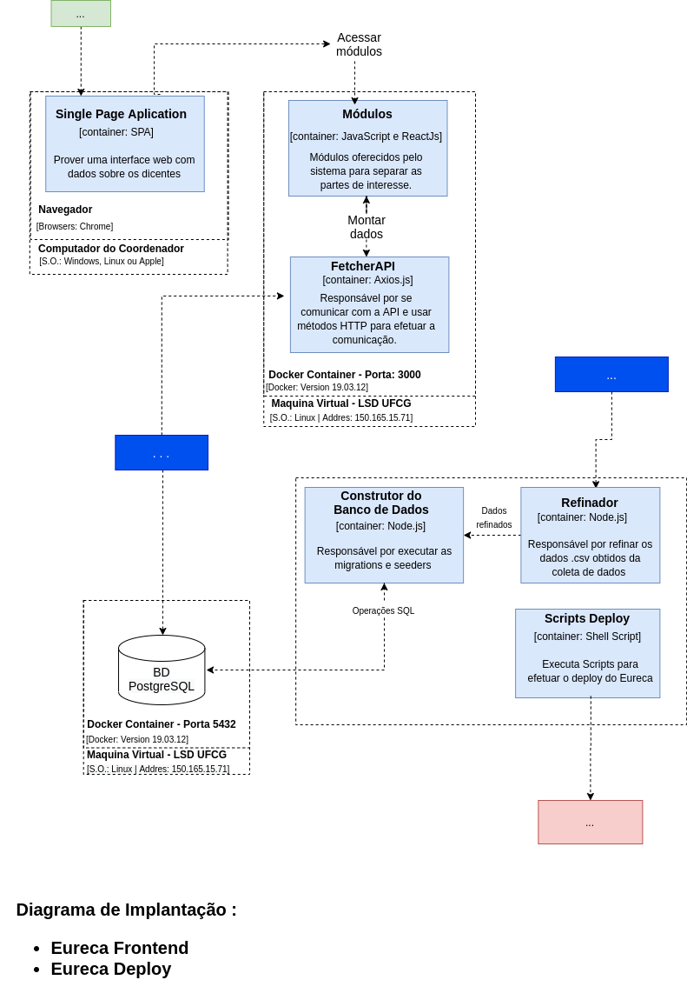
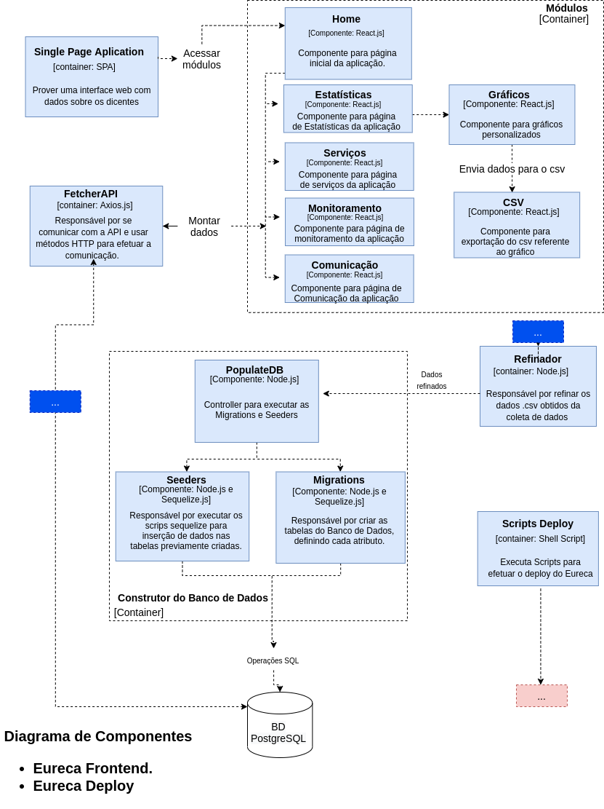
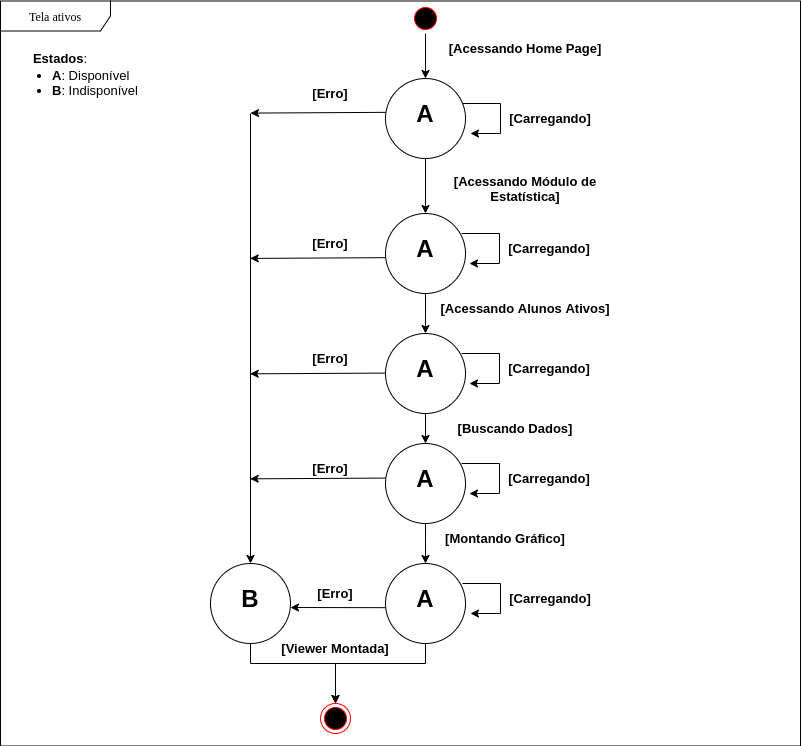

Documento referente à arquitetura do Frontend e Deploy do projeto Eureca
Autores
Este documento foi produzido por Hércules Rodrigues Anselmo.
- Matrícula: 117210908
- Contato: hercules.anselmo@ccc.ufcg.edu.br
- Projeto documentado: Eureca Frontend & Eureca Deploy
Descrição Arquitetural – Serviço Eureca
Este documento descreve parte da arquitetura do projeto Eureca. Essa descrição foi baseada principalmente no modelo C4.
É importante destacar, não será descrita toda a arquitetura do Eureca. O foco aqui é a descrição do serviço Frontend e Deploy.
Descrição Geral sobre o Eureca-Frontend e Eureca-Deploy
O Eureca-Frontend é um projeto que tem como objetivo separar a parte visual do projeto Eureca. Atualmente está sendo possível visualizar apenas um dos sub-módulos do Eureca, que é o sub-módulo Estatísticas.
O Eureca-Deploy é um projeto com principal objetivo efetuar o Deploy do Eureca, além de fazer todo o processo de configuração, escalabilidade e scripts para o Banco de Dados.
O Serviço Eureca
Objetivo Geral
Servir uma plataforma administradora para coordenadores de cursos da UFCG. A princípio está sendo desenvolvida para o curso de Ciências da Computação - UFCG. Esta plataforma tem como principal objetivo aumentar a eficiêcia e a facilidade para o coordenador com respeito aos discentes do curso. Ela contará com diversos serviços que auxiliará o coordenador na sua administração, sendo estes:
- Monitoramento
- Estatísticas
- Comunicação
- Serviços
Objetivos Específicos
Queremos implantar os dados obtidos através do eureca-coleta-dados em um banco de dados para que este possa ser acessado por um outro projeto Eureca (eureca-backend), que servirá uma API para ser consumida pelo eureca-frontend, sendo este, responsável por mostrar visualmente todos os serviços disponíveis na plataforma.
Contexto
O sistema Eureca-frontend busca as informações na API através de métodos HTTP, a API logo faz consultas ao Banco de Dados e retorna uma viewer para o Coordenador. No sistema Eureca-deploy, após receber os dados da coleta de dados, faz o procedimento de popular o Banco de Dados, mas também faz o deploy da aplicação através de containers Dockers, ele busca estas imagens no Docker Hub para levantar os respectivos containers.

Containers
É importante frizar que no momento da escrita deste artigo as relações das entidades são as que estão na imagem, podendo assim, serem alteradas.
No sistema Eureca-Frontend temos o Single Page Aplication, container responsável por prover uma interface para o usuário, a partir deste é possível acessar o container de Módulos, sendo este responsável por oferecer os serviços de gráficos, geração de arquivos csv e outras informação sobre os discentes, após a comunicação com o container FetcherAPI: Responsável por se comunicar com a API através da biblioteca Axios nos EndPoints:
- estatisticas/ativos
- estatisticas/ativos?de=periodo_min&ate=periodo_max
- estatisticas/ativos/csv
- estatisticas/ativos/csv?de=periodo_min&ate=periodo_max
- estatisticas/egressos
- estatisticas/egressos?de=periodo_min&ate=periodo_max
- estatisticas/egressos/csv
- estatisticas/egressos/csv?de=periodo_min&ate=periodo_max
- estatisticas/evadidos
- estatisticas/evadidos?de=periodo_min&ate=periodo_max
- estatisticas/evadidos/csv
- estatisticas/evadidos/csv?de=periodo_min&ate=periodo_max

No sistema Eureca-Deploy temos o container “Refinador”, responsável por tratar os dados recebidos do Eureca - Coleta de dados. Esses novos dados são repassados para o “Construtor do Banco de Dados” que irá implantar estes no Banco de Dados. O Container Scripts Deploy é responsável por fazer o deploy dos containers do Eureca-frontend, Eureca-backend e Banco de Dados, após acessar as imagens do Docker Hub.
Implantação
Detalhes de implantação do Eureca-Frontend:
Atualmente está implantado em uma máquina virtual no LSD UFCG através de um container docker na porta 3000. É possível acessá-lo pelo link: http://150.165.15.71:3000
O sistema Eureca-Deploy não tem implantação, pois como se trata de scrips para efetuar o deploy de terceiros, ele é executado apenas uma única vez. Após sua execução, o Banco de Dados postgreSQL fica hospedado, também, na mesma máquina do Eureca-Frontend, mas na porta 5432.

Componentes
Sobre os componentes do container Módulos:
O componente Home é responsável por renderizar a Home Page, que a partir deste é possível navegar entre os outros componentes oferecidos pelo Sistema. O componente Estatística, em específico, utiliza o componente gráficos para fazer a renderização dos dados em Gráficos específicos.
Sobre os componentes do container Contrutor do Banco de Dados:
O componente PopulateDB é responsável por utilizar os dados refinados e passá-los para os componentes Migrations e Seeders, responssáveis por popular o banco de dados.

Código
Visão de Informação
O diagrama a seguir mostra o estado da informação da tela ativos quando o coordenador tentar acessá-la.

Contribuições Concretas
Como faço parte do projeto Eureca, constantemente estou efetuando PR’s para contribuir com o projeto.